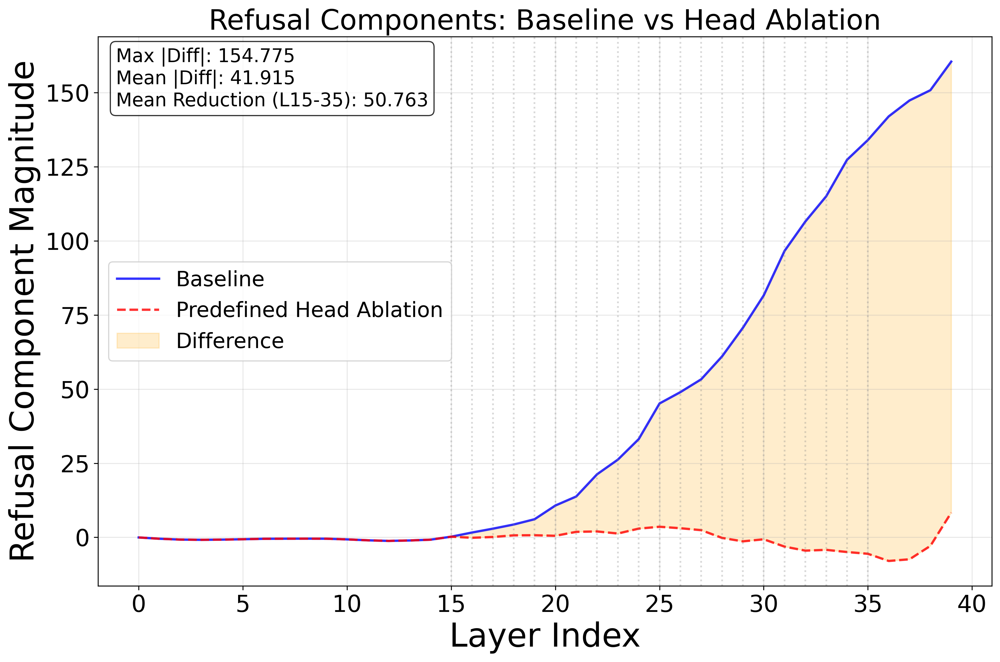
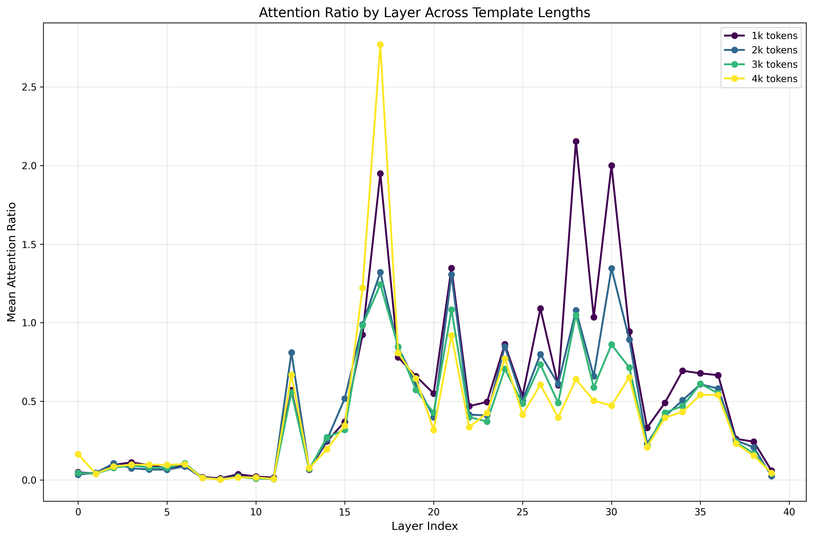
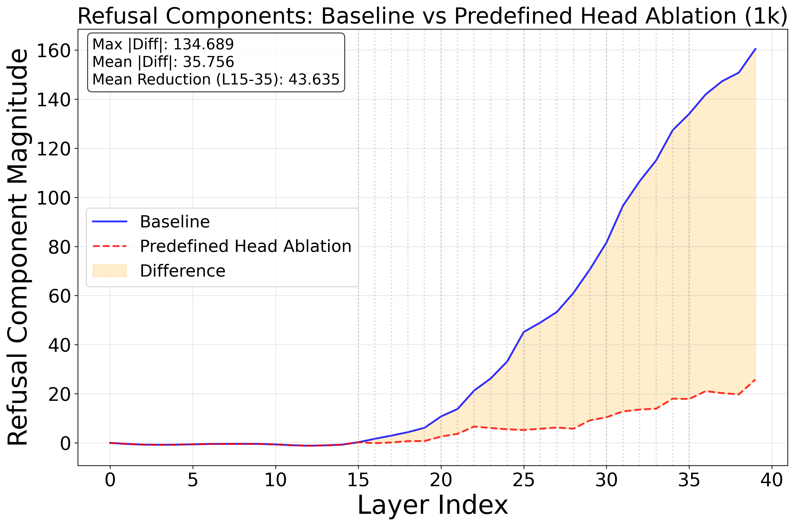
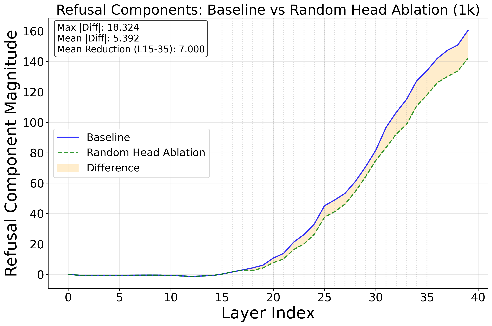
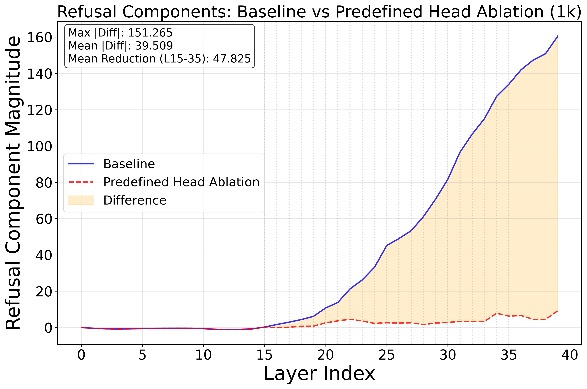
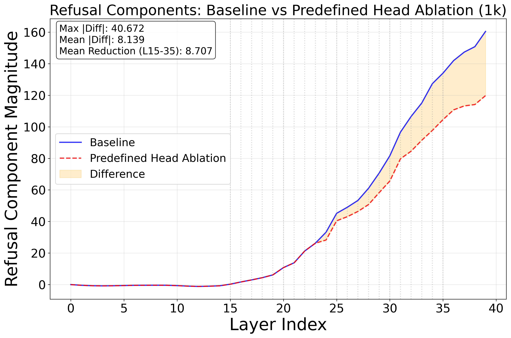

A Simple Yet Powerful Jailbreak Attack on Large Reasoning Models
We introduce CoT Hijacking, which achieves 99% attack success rate on frontier reasoning models
by padding harmful requests with benign reasoning sequences.
Large reasoning models (LRMs) achieve higher task performance by allocating more inference-time compute,
and prior works suggest this scaled reasoning may also strengthen safety by improving refusal.
Yet we find the opposite: the same reasoning can be used to bypass safety.
We introduce Chain-of-Thought Hijacking, a jailbreak attack on reasoning models.
The attack pads harmful requests with long sequences of harmless reasoning.
Across HarmBench, CoT Hijacking reaches a 99%, 94%, 100%, and 94% attack success rate (ASR)
on Gemini 2.5 Pro, GPT o4 mini, Grok 3 mini, and Claude 4 Sonnet, respectively—far exceeding prior jailbreak methods for LRMs.
To understand the effectiveness of our attack, we turn to a mechanistic analysis, which shows that
mid layers encode the strength of safety checking, while late layers encode the verification outcome.
Long benign CoT dilutes both signals by shifting attention away from harmful tokens.
Targeted ablations of attention heads identified by this analysis causally decrease refusal, confirming their role in a safety subnetwork.
Attack Overview
Figure 1: Safe vs. Jailbreak Examples.
The upper part illustrates a safe example where the target model refuses a harmful request.
The lower part shows a successful jailbreak where the target model complies under our attack.
Grey highlights indicate puzzle content, yellow highlights mark malicious requests.
Experimental Results
We evaluated CoT Hijacking on 100 HarmBench samples across four frontier reasoning models,
comparing against state-of-the-art baseline jailbreak methods.
Target Model
Mousetrap
H-CoT
AutoRAN
CoT Hijacking (Ours)
Gemini 2.5 Pro
44%
60%
69%
99%
GPT-o4 Mini
25%
65%
47%
94%
Grok 3 Mini
60%
66%
61%
100%
Claude 4 Sonnet
22%
11%
5%
94%
Attack Methodology
Figure 2: Jailbreak Method Pipeline.
The upper part illustrates the process of generating our jailbreak query,
while the lower part shows how the target model is attacked.
Attack Components
1
Benign Preface
Generate long chains of harmless reasoning (e.g., solving Sudoku puzzles, logic grids)
to dilute the attention on harmful content.
2
Harmful Payload
Embed the malicious request after the benign reasoning sequence,
making it appear as part of the puzzle solution.
3
Final-Answer Cue
Add explicit cues like "Finally, give the answer:" to shift model attention
toward the answer region and away from safety checks.
Impact of CoT Length on Safety
We tested the S1 reasoning model under three conditions: Minimal (truncated reasoning),
Natural (default length), and Extended (encouraged long reasoning).
The results show a clear trend:
27%
Minimal CoT
→
51%
Natural CoT
→
80%
Extended CoT
💡 Key Insight: Longer reasoning traces substantially increase attack success,
revealing that refusals degrade as CoT length grows.
Mechanistic Analysis
We analyze why CoT Hijacking works through refusal direction experiments,
attention pattern analysis, and causal interventions on attention heads.
Refusal Direction in Reasoning Models
Following prior work, we identified a single activation-space direction that governs refusal behavior.
By ablating this direction on harmful prompts, we increase attack success from 11% to 91%.
Conversely, adding it to harmless prompts causes over-refusal, dropping success from 94% to 1%.
Harmful Instructions
Baseline: 11%→Ablation: 91%
Harmless Instructions
Baseline: 94%→Addition: 1%
Figure 3: Refusal Components Across Layers.
Longer reasoning diminishes the refusal signal in layers 25-35.

Figure 4: Attention Head Ablation.
Ablating 60 heads flattens refusal, proving their causal role.
Attention Pattern Analysis
We measured how attention shifts away from harmful tokens as CoT length increases.
The attention ratio (harmful/puzzle tokens) declines systematically, especially in layers 25-35.
Figure 5: Attention Ratio vs CoT Length.
Longer CoT reduces attention to harmful instructions.

Figure 6: Layer-wise Attention Ratio.
Layers 25-35 show the strongest decline.
Causal Intervention: Attention Head Ablation
We ablated 60 specific heads (layers 15-35) that showed declining attention to harmful tokens.
This targeted intervention proved causal: refusal components flattened, making harmful and harmless prompts indistinguishable.

Figure 7: Targeted Head Ablation.
Ablating selected heads has strong effect.

Figure 8: Random Head Ablation.
Random ablation shows weaker effect.

Figure 9: Front-layer Heads (15-23).
Early layers play a stronger role.

Figure 10: Deep-layer Heads (23-35).
Later layers have weaker impact.
🔍 Mechanistic Insights
Low-dimensional refusal: Safety checks rely on a single direction in activation space,
which can be bidirectionally controlled.
Refusal dilution: Long benign reasoning dilutes the refusal signal by shifting attention
away from harmful tokens (only ~5% of context).
Safety subnetwork: Specific attention heads in layers 15-35 are causally responsible
for safety checking. Ablating them eliminates refusals.
Layer dynamics: Mid-layers encode the strength of safety checking,
while late layers encode the outcome. CoT hijacking suppresses both.
@article{zhao2026cot,
title={Chain-of-Thought Hijacking},
author={Jianli Zhao and Tingchen Fu and Rylan Schaeffer and Mrinank Sharma and Fazl Barez},
journal={ICLR},
year={2026}
}